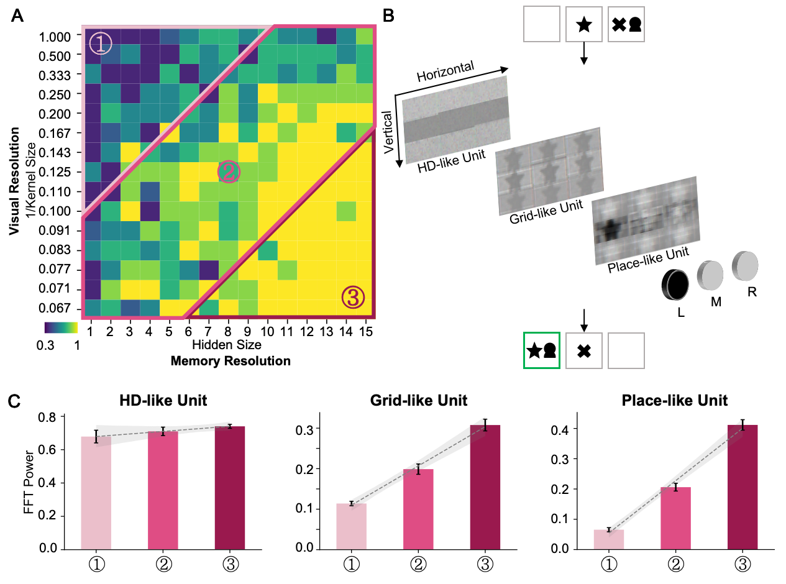

|
Wei Ding 丁为 I'm a PhD student at the Artificial Intelligence of Brain and Cognition Center at Tsinghua University. Currently, I am a visiting Physical Intelligence Lab at Carnegie Mellon University. My research interests lie at the intersection of cognitive neuroscience, learning, and robotics. I am particularly focused on how robots can acquire, adapt, and retain motor skills similarly to how humans do. Inspired by the Language of Thought theory, my work is trying to explore the primitives of motor skills, both at the perception level (such as dominant features of object affordance) and the movement level (such as muscle synergies). By leveraging VLMs, I aim to build generalized robotic skills that can be adapted and transferred across a variety of tasks based on these primitives. Additionally, I'm working on the RLHF process of CogVLM. I am fortunate to be advised by Prof. Jia Liu at College of AI and Tsinghua Laboratory of Brain and Intelligence. Previously, I received my Bachelor's Degree from the Department of Precision Instrument at Tsinghua University, where I was advised by Prof. Guoqi Li and Prof. Luping Shi. |
Research |
|
|
AToM-Bot: Embodied Fulfillment of Unspoken Human Needs with Affective Theory of Mind
Wei Ding, Fanhong Li, Ziteng Ji, Zhengrong Xue, Jia Liu* RSS 2024, Social Intelligence in Humans and Robots Workshop Spotlight A proactive robot-human interaction framework that uses Vision Language Models and Affective Theory of Mind to autonomously detect and fulfill unspoken human needs, achieving high human satisfaction in need detection and task execution. |
|

|
Scale-Dependent Coding of the Hippocampus in Relational Memory
Wei Ding, Yijing Lin, Bo Zhang*, Jia Liu* IJCAI 2024, Human Brain and Artificial Intelligence Workshop This study reveals a functional gradient along the hippocampus that encodes detailed experiences into abstract knowledge for decision-making, showing that the posterior hippocampus handles memory formation while the anterior hippocampus utilizes abstract knowledge for future planning. |
 |
Revealing the Efficient Coding Strategy of Humans in Relational Memory by Reinforcement Learning
Yijing Lin#, Wei Ding#, Jia Liu* In Submission This study uses computational modeling to show how selective attention and contextual inference help construct efficient relational memory, enabling humans to navigate complex information while overcoming memory capacity limitations. |
 |
ES-imagenet: A Million Event-Stream Classification Dataset for Spiking Neural Networks
Yihan Lin, Wei Ding, Shaohua Qiang, Lei Deng, Guoqi Li Frontiers in Neuroscience, 2021 This work introduces ES-ImageNet, a large-scale event-stream dataset generated from ILSVRC2012 using the Omnidirectional Discrete Gradient (ODG) algorithm, providing a low-cost, high-speed solution for advancing neuromorphic vision processing with spiking neural networks. |
 |
Comparing SNNs and RNNs on Neuromorphic Vision Datasets: Similarities and Differences
Weihua He et al. Neural Networks, 2020 This study systematically compares spiking neural networks (SNNs) and recurrent neural networks (RNNs) on neuromorphic vision data, highlighting their similarities and differences in spatiotemporal processing through unified benchmarking experiments. |
Honor |
|